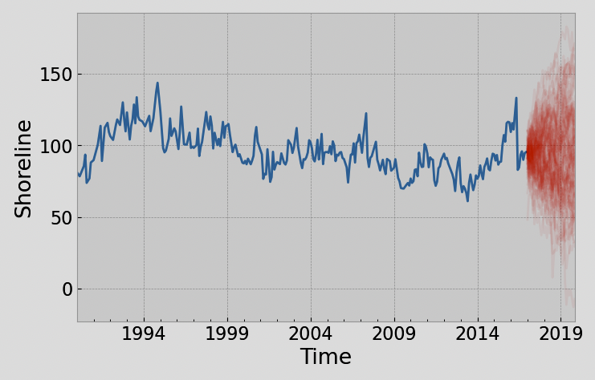
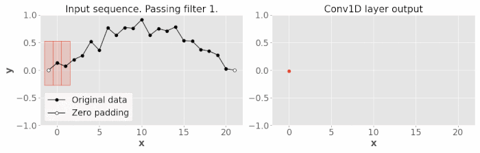

Spatial and Temporal Models
Time Series
- Collection of observations made sequentially in time
- Data Types:
- Univariate: Single observation at each time point (e.g. bike sale over time)
- Multivariate: Multiple observations at each time point (e.g. bike sale + profit over time)
- Heirarchical: Multiple time series, each with a hierarchical structure (e.g. bike sale + profit for each store over time)
- Common Tasks:
- Prediction/ Forecasting (Supervised Learning)
- Difficult since many factors
- Clustering/ Anomaly Detection (Unsupervised Learning)
- Prediction/ Forecasting (Supervised Learning)
Features of Time Series
Visualizing
- Time plot: x-axis = time, y-axis = value
Temporal Dependence
- Observations close in time are often correlated
- Can quanitify using autocorrelation
- Autocorrelation: Correlation of a time series with a lagged version of itself
- Lag: Time difference between two observations
- ACF: Autocorrelation function
- Plots autocorrelation for different lags
- PACF: Partial autocorrelation function
- Plots correlation between two observations after removing the effect of other lags
- e.g.
data[t (lag=1)] = data[t].shift(t)
Correlogram
- Plot of ACF vs. lag
- Helps identify patterns in time series
- Use
statsmodels.graphics.tsaplots.plot_acf()
from statsmodels.graphics.tsaplots import plot_acf
fig, (ax1,ax2) = plt.subplots(nrows=1, ncols=2, figsize=(11, 5))
plot_acf(data, lags=20, title='ACF', ax=ax1)
ax1.set_xlabel("Lag (years)")
ax1.set_ylabel('ACF')

Shading indicates if correlation is significantly different from 0
- \(CI = \pm z_{\alpha/2} SE(r_k)\), \(z_{\alpha/2} \approx 1.96\) for 95% CI
- \(SE(r_k) = \frac{1}{\sqrt{T}}\), where \(T\) is the number of observations - Or Bartlett’s formula: \(SE(r_k) = \sqrt{\frac{1 + 2\sum_{j=1}^{k-1}r_j^2}{T}}\)
CO2 plot has a trend so ACF for smaller lags tend to be higher
General Key Observations:
- ACF almost always decays with lag
- If a series alternates (oscillates about mean), ACF will alternates too
- If a series has seasonal or cyclical fluctuations, the ACF will oscillate at the same frequency
- If there is a trend, ACF will decay slower (due to high correlation of the consecutive observations)
- Experience is required to interpret ACF
Time Series Patterns
- Trend: Long-term increase/ decrease
- Seasonality: Regular pattern of up and down fluctuations (fixed interval)
- typically over smaller time frame
- Cyclic: Fluctuations not of fixed period (unknown and changing interval)
- typically over larger time frame
White Noise
Time series with:
- 0 mean
- Constant variance
- No autocorrelation
Further assumed that it is iid and gaussian: \(N(0, \sigma^2)\)
Why do we care?
- Cannot predict white noise
- If residuals from time series for a forecast should resemble white noise
- Implies that the model has captured all the information in the data
Time Series Decomposition
When we decompose, we split the time series into 3 components:
- Trend-cycle (T): Long-term increase/ decrease
- Seasonal (S): same as seasonal above
- Residual: Random fluctuations

- Additive Model: \(Y_t = T_t + S_t + R_t\)
- When the magnitude of the seasonal fluctuations does not change with the level of the time series
- Multiplicative Model: \(Y_t = T_t \times S_t \times R_t\)
- When the magnitude of the seasonal fluctuations does change with the level of the time series
Estimating the Trend
Curve Fitting: Fit a polynomial of degree \(n\) to the time series
from statsmodels.tsa.tsatools import detrend detrended = data - detrend(data, order=2) # order=2 for quadraticMoving Average: Smooths out short-term fluctuations and highlights longer-term trends
# rolling is a pandas function rolling_mean = df.rolling(window=5, center=True).mean() # For even window, common practice to do: window = 4 df.rolling(window).mean().rolling(2).mean().shift(-window//2)window: Number of observations used for calculating the statisticcenter: Set the labels at the center of the window- if odd, the label is at the center
- if even, the label is at the right
- The even code does this:
Estimating Seasonality
- Simple steps:
- Remove the trend from the data (the detrended data above)
- Estimate the seasonal component by averaging the detrended data over each season
Estimating the Residual
- The residual is the remainder after removing the trend and seasonal components
- If additive model: \(R_t = Y_t - T_t - S_t\)
- If multiplicative model: \(R_t = \frac{Y_t}{T_t \times S_t}\)
All Together
- Luckily, there exists a function to do all of this for us:
seasonal_decompose()
from statsmodels.tsa.seasonal import seasonal_decompose
decomposition = seasonal_decompose(data, model='additive', period=12)
decomposition.trend # the trend component
decomposition.seasonal # the seasonal component
decomposition.resid # the residual component
# plot the decomposition
fig = decomposition.plot()Forecasting
- Forecasting: Predicting future values of a time series
Baseline Forecasting Methods
- Average: Use average of all past observations

- Naive: Use the last observation as the forecast
- Seasonally Adjusted Naive: Same as Naive but with seasonally adjusted data (classical decomposition)

- Seasonally Naive: Use the last observation from the same season (only one with seasonality)
df["month"] = df.index.month
last_season = (df.drop_duplicates("month", keep="last")
.sort_values(by="month")
.set_index("month")["value"]
)
df = df.drop(columns="month")
last_season- Drift: Linearly extrapolate the trend (only one that is not a straight horizontal line)
Exponential Models
Simple Exponential Smoothing
- Forecast is a weighted average of all past observations
- Recursively defined: \(\hat{y}_{t+1|t} = \alpha y_t + (1 - \alpha) \hat{y}_{t|t-1}\)
- \(\alpha\): Smoothing parameter
- Close to 0: More weight to past observations
- Close to 1: More weight to current observation (closer to Naive forecast)
- Initial Forecast:
- \(\hat{y}_{1|0} = y_1\)
- Heuristic: linear interpolation of the first few observations
- Learn it by optimizing SSE
- Forecasts are flat
from statsmodels.tsa.holtwinters import SimpleExpSmoothing
SES = SimpleExpSmoothing(data, initialization_method='heuristic')=
# Fit the model
model = SES.fit(smoothing_level=0.2, optimized=False)
# Forecast
forecast = model.forecast(steps=5)Holt’s Method
Extend SES to include a trend component \[\hat{y}_{t+h|t} = \ell_t + h b_t\]
\[\ell_t = \alpha y_t + (1 - \alpha)(\ell_{t-1} + b_{t-1})\]
\[b_t = \beta(\ell_t - \ell_{t-1}) + (1 - \beta)b_{t-1}\]
\(\ell_t\): Level
\(b_t\): Smoothness of the trend
- Close to 0: Trend is more linear
- Close to 1: Trend changes with each observation
\(\alpha\): Smoothing parameter for level
Holt’s Winter Method
Extend Holt’s method to include a seasonal component \[\hat{y}_{t+h|t} = \ell_t + h b_t + s_{t-m+h_m}\]
\[b_t = \beta(\ell_t - \ell_{t-1}) + (1 - \beta)b_{t-1}\]
For Additive Seasonal: \[\ell_t = \alpha(y_t - s_{t-m}) + (1 - \alpha)(\ell_{t-1} + b_{t-1})\]
\[s_t = \gamma(y_t - \ell_{t-1} - b_{t-1}) + (1 - \gamma)s_{t-m}\]
For Multiplicative Seasonal: \[\ell_t = \alpha\frac{y_t}{s_{t-m}} + (1 - \alpha)(\ell_{t-1} + b_{t-1})\]
\[s_t = \gamma\frac{y_t}{\ell_{t-1} + b_{t-1}} + (1 - \gamma)s_{t-m}\]
| Trend component | Seasonal Component |
|---|---|
None (N) |
None (N) |
Additive (A) |
Additive (A) |
Additive Damped (Ad) |
Multiplicative (M) |
- Simple Exponential Smoothing
(N,N) - Holt’s Method
(A,N) - Holt’s Winter Method
(A,A)
from statsmodels.tsa.holtwinters import ExponentialSmoothing
model = ExponentialSmoothing(data,
trend='add',
damped_trend=True,
seasonal='mul',
seasonal_periods=12,
initialization_method='estimated'
).fit(method="least_squares")ETS (Error, Trend, Seasonal) Models
- Components:
- Error:
{A, M} - Trend:
{N, A, Ad} - Seasonal:
{N, A, M}
- Error:
from statsmodels.tsa.holtwinters import ETSModel
model = ETSModel(data,
error='add',
trend='add',
damped_trend=True,
seasonal='add',
seasonal_periods=12
).fit()
# Forecast
model.forecast(steps=5)
# Summary
model.summary()- Can generate prediction intervals (confidence intervals):
model.get_prediction()(analytical)model.simulate()
pred = model.get_prediction(start=df.index[-1] + pd.DateOffset(months=1), end="2020").summary_frame()
# or
q = 0.975 # 95% CI
sim = model.simulate(anchor="end", nsimulations=348, repetitions=100, random_errors="bootstrap")
simu = pd.DataFrame({"median": simulations.median(axis=1),
"pi_lower": simulations.quantile((1 - q), axis=1),
"pi_upper": simulations.quantile(q, axis=1)},
index=simulations.index)Selecting a Model
- Metrics, Commonly used:
- AIC, BIC
- SSE/ MSE/ RMSE
# using ets model from above model.aic model.bic model.mse - Residuals:
- Visual inspection (should be uncorrelated, zero mean, normally distributed)
- Running diagnostic Portmanteau tests:
- Ljung-Box Test: \(H_0\): Residuals are uncorrelated (white noise)
- p-value < 0.05: Reject \(H_0\) (bad)
- Jarque-Bera Test: \(H_0\): Residuals are normally distributed
- p-value < 0.05: Reject \(H_0\) (bad)
- Ljung-Box Test: \(H_0\): Residuals are uncorrelated (white noise)
# using ets model from above
model.summary().tables[-1]
# Ljung-Box Test
p = model.test_serial_correlation(method="ljungbox", lags=10)[0,1,-1]
# Jarque-Bera Test
p = model.test_normality(method="jarquebera")[0,1]- Out-of-sample Forecasting:
- Split data into training and testing
- Fit model on training data
- Forecast on testing data
- Compare forecast with actuals
ARIMA Models
- ARIMA: AutoRegressive Integrated Moving Average
- Commonly used for time series forecasting (other than exponential smoothing)
- Based on autocorrelation of data
- Do not model trend nor seasonality, so it is typically constrained to stationary data
Stationarity
- Statistical properties of a time series do not change over time
- Mean, variance is constant
- Is roughly horizontal (no strong trend)
- Does not show predictable patterns (no seasonality)
- DOES not mean that the time series is constant, just that the way it changes is constant
- It is one way of modelling dependence structure
- Can only be independent in one way but dependent in many ways
Strong vs Weak Stationarity
| Property | Strong Stationarity | Weak Stationarity |
|---|---|---|
| Mean, Variance, Autocovariance | Constant | Constant |
| Higher order moments (skewness, kurtosis) | Constant | Not necessarily constant |
- Weak stationarity is often sufficient for time series analysis
Checking for Stationarity
- Visual Inspection: Plot the time series
- Look for trends, seasonality, and variance (none of these should be present)
- Make a correlogram plot (ACF plot should rapidly decay to 0)
- Summary Statistics: Calculate mean, variance, and autocovariance
- Mean and variance should be roughly constant over time
- Hypothesis Testing: Use statistical tests
- Augmented Dickey-Fuller (ADF) test
- Null hypothesis: Time series is non-stationary
- small p: it is stationary (reject null)
- Use
statsmodels.tsa.stattools.adfuller
- Kwiatkowski-Phillips-Schmidt-Shin (KPSS) test
- Null hypothesis: Time series is stationary
- small p: it is non-stationary (reject null)
- Augmented Dickey-Fuller (ADF) test
from statsmodels.tsa.stattools import adfuller
# ADF test
result = adfuller(data)
print('ADF Statistic: %f' % result[0])
print('p-value: %f' % result[1])Making a Time Series Stationary
Stabilizing the variance using transformations
- Log or box-cox transformation
\[w_t = \begin{cases} \frac{y_t^\lambda - 1}{\lambda} & \text{if } \lambda \neq 0 \\ \ln(y_t) & \text{if } \lambda = 0 \end{cases}\]
from scipy.stats import boxcox import numpy as np data = boxcox(data, lmbda=0) # log transformation data = np.log(data)Stabilize the mean using differencing
- First difference: \(y' = y_t - y_{t-1}\)
- Second difference: \(y'' = y' - y'_{t-1} = y_t - 2y_{t-1} + y_{t-2}\)
- Seasonal difference: \(y' = y_t - y_{t-m}\), where \(m\) is the seasonal period
# First difference data1 = data.diff().dropna() # Second difference data2 = data.diff().diff().dropna() # Seasonal difference, m is the seasonal period data_m = data.diff(m).dropna()
AR and MA Models
| AR (AutoRegressive) Model | MA (Moving Average) Model |
|---|---|
| Regression of the time series on its own lagged values | Regression of the time series on past forecast errors |
| \(y_t = \phi_1 y_{t-1} + \phi_2 y_{t-2} + \ldots + \phi_p y_{t-p} + \epsilon_t\) | \(y_t = \epsilon_t + \theta_1 \epsilon_{t-1} + \theta_2 \epsilon_{t-2} + \ldots + \theta_q \epsilon_{t-q}\) |
| \(p\): order of the AR model | \(q\): order of the MA model |
| \(\phi\): AR coefficients | \(\theta\): MA coefficients |
| \(\epsilon_t\): white noise | \(\epsilon_t\): white noise |
| Long memory model: \(y_1\) has a direct effect on \(y_t\) for all \(t\) | Short memory model: \(y_t\) is only affected by recent values of \(\epsilon\) |
| Good for modeling time-series with dependency on past values | Good for modeling time-series with a lot of volatility and noise |
| Less sensitive to choice of lag or window size | More sensitive to choice of lag or window size |
- Both values are between -1 and 1
- AR value of 1 means that the time series is a random walk
ARMA Model
- ARMA: AutoRegressive Moving Average
- Combines AR and MA models
- Key Idea: Parsimony
- fit a simpler, mixed model with fewer parameters, than either a pure AR or a pure MA model
\[y_t = c + \phi_1 y_{t-1} + \phi_2 y_{t-2} + \ldots + \phi_p y_{t-p} + \epsilon_t + \theta_1 \epsilon_{t-1} + \theta_2 \epsilon_{t-2} + \ldots + \theta_q \epsilon_{t-q}\]
- \(c\): constant
- \(\phi\): AR coefficients
- \(\theta\): MA coefficients
- Usually write it as
ARMA(p, q)
ARIMA Model
- ARIMA: AutoRegressive Integrated Moving Average
- Combines ARMA with differencing
ARIMA(p, d, q)p: order of the AR modeld: degree of differencingq: order of the MA model
- Use
statsmodels.tsa.arima.model.ARIMA
from statsmodels.tsa.arima.model import ARIMA
# All with first order differencing
model_ar = ARIMA(data["col"], order=(3, 1, 0)).fit() # AR(3)
model_ma = ARIMA(data["col"], order=(0, 1, 1)).fit() # MA(1)
model_arima = ARIMA(data["col"], order=(3, 1, 3)).fit() # ARIMA(3, 3)
model_arma = ARIMA(data["col"], order=(3, 0, 3)).fit() # ARMA(3, 3)ARIMA hyperparameter tuning
import pmdarima as pm
autoarima = pm.auto_arima(data.col,
start_p=0, star_d=1, start_q=0,
max_p=5, max_d=3, max_q=5,
seasonal=False)
autoarima.summary()SARIMA
- SARIMA: Seasonal ARIMA
SARIMA(p, d, q)(P, D, Q, m)p,d,q: ARIMA parametersP,D,Q: Seasonal ARIMA parametersm: seasonal period
- E.g. In a dataset with years and 12 months
- \(p=2\) means Jan is affected by Dec and Nov
- \(P=2\) means Jan is affected by Jan of the previous 2 years
sarima = ARIMA(data["col"], order=(3, 1, 3), seasonal_order=(1, 1, 1, 12)).fit()- Also have SARIMAX (with exogenous variables)
- adds exogenous variables (other time series) to the model
- Not the most effective model
Choosing Orders
- ACF and PACF plots
- ACF: Autocorrelation Function
- PACF: Partial Autocorrelation Function
- Use these to determine the order of the AR and MA models
| ACF Plot | PACF Plot |
|---|---|
| Measures correlation between an observation and its lagged values | same but removes intermediate correlations (kinda isolates the direct effect) |
| For MA(q), cuts off after lag q | For AR(p), cuts off after lag p |
| Else, tails off (exp or like damped sin) | Else, tails off (no clear pattern) |
- See the cutoff when the peaks are lower than the shaded region
Example AR
\(y_t=-0.9y_{t-1}+\epsilon_t\)

\(y_t=0.3y_{t-1}+\epsilon_t\)

\(y_t=0.5y_{t-1}-0.8y_{t-2}+\epsilon_t\)

from statsmodels.graphics.tsaplots import plot_acf, plot_pacf
from statsmodels.tsa.arima_process import ArmaProcess
# Simulate 1
df = pd.DataFrame(ArmaProcess(ar=[1, -0.9]).generate_sample())
# Simulate 2
df = pd.DataFrame(ArmaProcess(ar=[1, 0.3]).generate_sample())
# Simulate 3
df = pd.DataFrame(ArmaProcess(ar=[1, -0.5, 0.8]).generate_sample())
# Plot
fig, axes = plt.subplots(nrows=1, ncols=3, figsize=(18, 5))
fig.suptitle("y_t = 0.9y_{t-1} + e_t")
df.plot(ax=axes[0])
plot_acf(df, ax=axes[1])
plot_pacf(df, ax=axes[2]);Example MA
- \(y_t = \epsilon_t + 0.9\epsilon_{t-1}\)

df = pd.DataFrame(ArmaProcess(ma=[1, -0.9]).generate_sample())
fig, axes = plt.subplots(nrows=1, ncols=3, figsize=(18, 6))
fig.suptitle("$y_t = \epsilon_t - 0.9 \epsilon_{t-1} $")
df.plot(ax=axes[0])
plot_acf(df, ax=axes[1])
plot_pacf(df, ax=axes[2])Whole process with ARIMA
(Based on lab 2 q4)
Load Data
import pandas as pd # turns first col into index + parses dates df = pd.read_csv('data.csv', index_col=0, parse_dates=True)EDA with plot + ACF + PACF (Stationarity check)
import matplotlib.pyplot as plt from statsmodels.graphics.tsaplots import plot_acf, plot_pacf fig, axes = plt.subplots(nrows=1, ncols=3, figsize=(18, 5)) df.plot(ax=axes[0]) plot_acf(df, ax=axes[1]) plot_pacf(df, ax=axes[2]);- Can also check with ADF test (p>0.05 means non-stationary)
from statsmodels.tsa.stattools import adfuller # ADF test result = adfuller(data)Make the time series stationary
# Difference data1 = data.diff().dropna() # Log transformation data = np.log(data)- Repeat step 2 and check, also use ACF and PACF to find the AR and MA orders
ARIMA Model
from statsmodels.tsa.arima.model import ARIMA model = ARIMA(train, order=(2, 1, 2), seasonal_order=(0, 1, 0, 12)).fit() model.summary() model.plot_diagnostics()- Can also use
auto_arimafrompmdarimafor hyperparameter tuning
import pmdarima as pm autoarima = pm.auto_arima(data.col, start_p=0, star_d=1, start_q=0, max_p=5, max_d=3, max_q=5, seasonal=False) autoarima.summary() autoarima.plot_diagnostics()- Can also use
Forecast
forecast = model.forecast(steps=len(valid))- Can also use
predictfor in-sample prediction
pred = model.predict(start=len(train), end=len(train)+len(valid)-1) fig, ax = plt.subplots() ax.plot(valid, label='Valid') ax.plot(pred, label='Prediction') ax.legend()- Can also use
Time Series Forecasting in ML
Key Differences vs. Traditional ML
| Traditional ML | Time Series ML |
|---|---|
| Data is IID | Data is ordered |
| CV is random | Use sliding window CV |
| Use feature engineering | Use lags, rolling windows, etc. |
| Predict new data | Predict future (specify horizon) |
sktime Library
1. Load Data
import pandas as pd
# turns first col into index + parses dates
df = pd.read_csv('data.csv', index_col=0, parse_dates=True)2. Feature Engineering
from sktime.transformations.series.lag import Lag
# Make a new column with lag
df['col-1'] = df['col'].shift(1)
# or use sktime
t = Lag(lags=[1,2,3], index_out="original")
pd.concat([df, t.fit_transform(df)], axis=1)3. Train-Test Split
- Never use random shuffling
- Need to keep temporal order
from sktime.split import temporal_train_test_split
from sklearn.model_selection import train_test_split
y_train, y_test = temporal_train_test_split(y, test_size=0.2)
# or use sklearn
df_train, df_test = train_test_split(df.dropna(), test_size=0.2, shuffle=False)Cross-Validation for Time Series
- Expanding Window: start with small training set and increase it

- Fixed/sliding Window: use a fixed window size

4. Model Fitting
from sktime.forecasting.model_evaluation import evaluate
from sktime.forecasting.naive import NaiveForecaster
from sktime.forecasting.arima import AutoARIMA
forecaster = NaiveForecaster(strategy="last", sp=12) # seasonal naive
# forecaster = AutoARIMA(sp=12)
results = evaluate(forecaster=forecaster, y=y_train, cv=cv, strategy="refit", return_data=True)Forecasting
- One-step forecasting: one step ahead
- Multi-step forecasting: multiple steps ahead
- Recursive strategy: predict
t, then it becomes part of the input fort+1 - Direct strategy: have a model for each step (model for
t+1, another fort+2, etc) - Hybrid strategy: is dumb and bad
- Multi-output strategy: 2 different series (e.g. temperature and humidity)
- Recursive strategy: predict
from sklearn.neighbors import KNeighborsRegressor
from sktime.forecasting.compose import make_reduction
regressor = KNeighborsRegressor()
forecaster = make_reduction(regressor,
window_length=12,
strategy="recursive") # or "direct" or "dirrec" or "multioutput"Feature Preprocessing and Engineering
Preprocessing
- Coerce to stationary (via diff or transforms)
- Smoothing (e.g. moving average)
- Impute missing value (e.g. linear interpolation)
- Removing outliers
Feature Engineering
- Lagging features/ responses
- Adding time stamps (e.g. day of week, month, etc) 3, Rolling Statistics (e.g. rolling mean, rolling std)
Multivariate Time Series
- Means time series with multiple variables (e.g. temperature and humidity)
Probabilistic Forecasting
- We have been dealing with point forecasts (modelling averages)
- Want to estimate the uncertainty of our forecasts
- or the extreme (e.g. 90% or 95% quantiles)
- example: find upper quantile of electricity demand so that we can plan for the maximum demand
- or predict the variance of the forecast (how volatile a metric will be in the future)
- or the extreme (e.g. 90% or 95% quantiles)
Analytical
- Assume distribution of forecasts are normal
\[ \hat{y}_{T+h|T} \pm c \hat{\sigma}_{h} \]
- \(\hat{\sigma}_{h}\) is the standard deviation of the forecast
- \(c\): coverage factor (e.g. 1.96 for 95% confidence interval)
\[ \hat{\sigma}_{h} = \sqrt{\frac{1}{T-K}\sum_{t=1}^{T} e_{t}^{2}} \]
- Focus is finding \(\hat{\sigma}_{h}\)
- \(K\): number of parameters
- \(T\): total length of time series
- \(e_{t} = y_{t} - \hat{y}_{t|t-1}\)
- Methods that have been derived mathematically: | Method | Forecast sd | |——–|————–| | Mean | \(\hat{\sigma}_{h} = \hat{\sigma_1} \sqrt{1 + \frac{h}{T}}\) | |Naive | \(\hat{\sigma}_{h} = \hat{\sigma_1} \sqrt{h}\) | | Seasonal Naive | $_{h} = $ | | Drift | \(\hat{\sigma}_{h} = \hat{\sigma_1} \sqrt{h(1+\frac{h}{T})}\) |
- Recall: \(h\) is the forecast horizon (steps ahead), \(m\) is the seasonal period
from pandas import pd
c = 1.96 # 95% confidence interval
train['pred'] = train['y'].shift(1)
train['residuals'] = train['y'] - train['pred']
sigma = train['residuals'].std()
h = np.arange(1, len(forecast_index) + 1)
naive_forecast = train['y'].iloc[-1]
# create lower and upper bound
naive = pd.DataFrame({"y": naive_forecast,
"pi_lower": naive_forecast - c * sigma * np.sqrt(horizon),
"pi_upper": naive_forecast + c * sigma * np.sqrt(horizon),
"Label": "Naive"},
index=forecast_index)
plot_prediction_intervals(train["y"], naive, "y", valid=valid["y"])# ETS
model = ETSModel(train["y"], error="add", trend="add", seasonal="add").fit(disp=0)
ets = model.get_prediction(start=forecast_index[0], end=forecast_index[-1]).summary_frame()
plot_prediction_intervals(train["y"], ets, "mean", valid=valid["y"], width=800)
# ARIMA
model = ARIMA(train["y"], order=(3, 1, 0), seasonal_order=(2, 1, 0, 12)).fit()
arima = model.get_prediction(start=forecast_index[0], end=forecast_index[-1]).summary_frame()
plot_prediction_intervals(train["y"], arima, "mean", valid=valid["y"], width=800)
Simulation and Bootstrapping
- Assume future errors will be similar to past errors
- Draw from the distribution of past errors to simulate future errors
\[y_{T+h} = \hat{y}_{T+h|T} + \epsilon_{T+h}\]
# Fit an ETS model
model = ETSModel(train["y"], error="add", trend="add").fit(disp=0)
# simulate predictions
ets = model.simulate(anchor="end", nsimulations=len(forecast_index),
repetitions=n_simulations,
random_errors="bootstrap")
# plot
ax = train["y"].plot.line()
ets.plot.line(ax=ax, legend=False, color="r", alpha=0.05,
xlabel="Time", ylabel="y", figsize=(8,5));
# get quantiles
ets = pd.DataFrame({"median": ets.median(axis=1),
"pi_lower": ets.quantile(1-0.975, axis=1),
"pi_upper": ets.quantile(0.975, axis=1)},
index=forecast_index)
Quantile Regression
- Wish to predict particular quantile instead of mean
- e.g \(q=0.9\) so we expect 90% of the future values to be below the forecast
- Pinball loss/ Quantile loss: \[ \mathcal{L}= \left\{ \begin{array}{ll} (1-q)(\hat{y}_{t,q}-y_t) \text{,} \;\; \text{ if } y_t < \hat{y}_{t,q} \\ q(y_t-\hat{y}_{t,q}) \text{,} \;\;\;\;\;\;\;\;\;\; \text{ if } y_t \ge \hat{y}_{t,q} \\ \end{array} \right. \]
| High Quantile | Low Quantile |
|---|---|
| Higher penalty for predicting OVER | Higher penalty for predicting UNDER |
Quantile Regression in PyTorch
see here
Quantile loss is not currently a supported criterion in pytorch but it’s easy to define ourselves. We really have two options:
- Train a network for each quantile we want to predict; or
- Train a network to output multiple quantiles at once
Evaluating Distributional Forecast Accuracy
There are 4 main sources of uncertainty:
- Random error term
- Uncertainty in model parameter estimates
- Uncertainty in model selection
- Uncertainty about consistency of data generating process in the future
Most methods only consider the first source of uncertainty
Simulation tries to consider 2 and 3
4 is practically impossible to consider
Anomaly Detection
- Outliers are observations that are significantly different from the rest of the data
- Can be due to measurement error, data entry error, or just unique observations
Rolling Median
- Methodology:
- Subtract the rolling median from data (with suitable window size)
- Calculate standard deviation of the residuals (\(\hat{\sigma_r}\))
- Assume normally distributed residuals then identify outliers as outside the 95% confidence interval (\(\pm 1.96 \hat{\sigma_r}\))
STL Decomposition
- Methodology:
- Decompose time series to find residuals:
- Non-seasonal data: use LOESS
- Seasonal data: use STL (Seasonal-Trend decomposition using LOESS)
- Calculate \(q_{0.1}\) and \(q_{0.9}\) of the residuals
- Identify outliers as \(\pm2 \times (q_{0.9} - q_{0.1})\)
- Decompose time series to find residuals:
Model-based
- Methodology:
- Fit a model to the data
- Identify outliers as significant deviations from model predictions (e.g. 95% confidence interval)
ML approaches
- Train an ML model to predict outliers
- A few common packages: pyod, sklearn, luminaire, sklyline, etc.
Isolation Forest
- Built on basis of decision trees
- High-level idea:
- randomly select a feature
- randomly splits that feature into 2 values
- repeat until all data points are isolated
- Less splits to isolate a data point = more likely to be an outlier
- Score = [0, 1] where 1 is an outlier, > 0.5 are normal observations.

- Example of sklearn’s
IsolationForest:
from sklearn.ensemble import IsolationForest
outliers = IsolationForest(contamination=0.05).fit_predict(df) == -1K-NN
- For each data point, calculate the distance to its k-th nearest neighbor
- Large distance = outlier
- Supports 3 kNN detectors:
- Largest: distance to the k-th neighbor
- Mean: average distance to k neighbors
- Median: median distance to k neighbors
- pyod’s
KNN()outlier detection
from pyod.models.knn import KNN
outliers = KNN(contamination=0.05).fit_predict(df).labels_ == 1Global vs Local Outliers
Global outliers: A data point with its value is far outside of the entirety of the data set (e.g., billionaires)
Local/Contextual outliers: A data point is considered a contextual outlier if its value significantly deviates from the rest the data points in the same context. (e.g., earning 50K income in a developing countries)
Imputation
- Imputation: Filling in missing values/ outliers in a dataset
- Overarching techniques:
- Remove (
.dropna()) - Fill manually based on some expert-interpreted values (
.fillna()) - Fill with mean/median/mode (
.fillna()) - Fill based on rolling statistic, e.g. rolling mean/median
- Polynomial interpolation
- Fill based on temporal dependence
- i.e. use same value from the same period last season, or average of all periods in the past season
- Fill with model fitted values
- Use
MICE(Multiple Imputation by Chained Equations) fromstatsmodelsorIterativeImputerfromsklearn.
- Remove (
Deep Learning with Time Series
Classical time series (ARIMA, Exponential Smoothing) limitations:
- They are linear models
- Inputs must be specified, not learned automatically
- Focus on univariate time series (lack support for multivariate time series)
- Focus on regression (lack support for classification)
- Assumes complete, non-missing data
Deep learning models can address these limitations, as NNs are:
- robust to noise
- can learn complex, non-linear relationships
- support multivariate time series
- feature learning (learn the inputs)
- temporal dependencies can be learned
Neural Networks
- NN allows us so that the features do not need to be ordered
- e.g. target, lag1. lag2, lag3 is the same as lag2, lag3, target, lag1
- Need to take into account inherent temporal dependencies (approach above does not)
- Do something similar like CNN (retain spatial information) but for time series
Convolutional Neural Networks (CNN)
- Can work with 3D data (channels, height, width)
- Can also do 2D data (features, time)
- Use
Conv1Dfrompytorchto work with time series data- Looks at local groups of data (filter of some size)
- Missing memory (does not remember previous values, only looks at local groups of data)
- can be solved with RNN

Image with sequence of 20 values, filtered with 4 kernels of size 3
import torch.nn.Conv1d
import pandas as pd
import plotly.express as px
from sktime.utils.data_processing import lag_df
conv_layer = nn.Conv1d(in_channels=1, out_channels=4, kernel_size=3, padding=1)
# Load data
train = (pd.read_csv("data/unemployed_train.csv", index_col=0, parse_dates=True)
.resample("1M").mean()
.assign(Label="Train")
)
test = (pd.read_csv("data/unemployed_valid.csv", index_col=0, parse_dates=True)
.resample("1M").mean()
.assign(Label="Test")
)
# Plot train and test data
px.line(pd.concat((train, test)), y="Unemployed persons", color="Label", width=600, title="Australian Unemployment")
# Make lag features
SEQUENCE_LENGTH = 24
BATCH_SIZE = 16
cnn_data = lag_df(train, lags=SEQUENCE_LENGTH, dropna=True)
cnn_data = cnn_data[cnn_data.columns[::-1]] # Reverse columns to have lag0 at the end- Then make CNN with optimizer
Adamand loss functionMSE
Recurrent Neural Networks (RNN)
Reasonable results with CNN because preserve structure of data
Structure: - Split up and process one time-step at a time

Great video on RNNs
Draw back: Vanishing Gradient Problem
- Gradient becomes so small that it does not update the weights
- Early time steps are not updated (long-term dependencies are not learned), they “forget”
- Can be solved with LSTM and GRU
Long Short-Term Memory (LSTM)

Another great video on LSTM
All the yellow boxes (LSTM cells) are identical (same weights and architecture)
Components:
- Cell State: The horizontal line running through the top of the diagram
- It runs straight down the entire chain, with only some minor linear interactions
- Forget Gate: Decides what information to throw away from the cell state
- Input Gate: Decides what new information to store in the cell state
- Output Gate: Decides what to output based on the cell state
- Cell State: The horizontal line running through the top of the diagram
from torch import nn
class LSTM(nn.Module):
def __init__(self, input_size, output_size, hidden_dim):
super().__init__()
self.hidden_dim = hidden_dim
self.lstm = nn.LSTM(input_size, hidden_dim, batch_first=True, num_layers=1)
self.fc = nn.Linear(hidden_dim, output_size)
def forward(self, x, hidden):
# x : (batch_size, seq_length, input_size)
# hidden : (short_mem, long_mem), each (n_layers, batch_size, hidden_dim)
# output : (batch_size, seq_length, input_size)
# note that the output will have the same shape as the input because
# it makes a forecast for each time step in the sequence
# but we only care about the last prediction (the forecast after the sequence)
# so I'll only take the last value of the output
prediction, (short_mem, long_mem) = self.lstm(x, hidden)
output = self.fc(prediction)
return output[:, -1, :], short_mem, long_mem- GRU is similar to LSTM, but has less parameters and is faster to train
Useful Time Series Packages
Prophet (Facebook)
- Frankenstein of classical time series models (decomposition, regression, exponential smoothing, etc)
import pandas as pd
from prophet import Prophet
# Sample data
data = pd.read_csv('example_data.csv')
data['ds'] = pd.to_datetime(data['ds'])
# Initialize Prophet model
model = Prophet(interval_width=0.95, yearly_seasonality=True, weekly_seasonality=True, daily_seasonality=True)
# Fit the model
model.fit(data)
# Make future predictions
test_dates = model.make_future_dataframe(periods=len(test), freq='M', include_history=False)
forecast = model.predict(test_dates)
# Visualize the forecast
fig = model.plot(forecast)Other ML based time series packages
- GluonTS: alternative to pytorch.
- PyTorch Forecasting: built on top of pytorch, but with more focus on time series forecasting.
- sktime: scikit-learn for time series data.
- Tidyverts: R package for time series forecasting.
Additional Topics
- Heirarchical Time Series: Forecasting at different levels of aggregation (e.g. product sales at store level, then at regional level, then at national level)
- Bottom-up: Forecast at the lowest level and aggregate up
- Top-down: Forecast at the highest level and disaggregate down
- Multiple Seasonalities: e.g. daily and weekly seasonality
- decompose independently
- decompose simultaneously (e.g. propher/ statsmodels)
- Multivariate Time Series: e.g. sales and advertising spend
- VAR (Vector Auto Regression)
- LSTM with multiple inputs
- Explanatory variables:
- easy to add features to ML models
- ARIMA can but using
exogparameter
- Time Series Classification:
- Hidden Markov Models
Spatial Data
- Data with location information
- Has spacial dependence
- Main Tasks:
- Wrangling
- Visualization
- Modelling
- Representation:
- Vector
- Raster
Working with Vector Data
- Collection of discrete locations/ vertices
(x, y)to form:- Points: single location
- Lines: series of points
- Polygons: series of lines (closed shape)
- Stored in
.shp(shapefile) format.shp: geometry.shx: index (how geometry relates to one another).dbf: attributes (e.g. population, area)
Geopandas Intro
- To read and write vector data
- Built off of
pandasandshapely - Similar to
pandasit has:GeoSeries: series of geometriesGeoDataFrame: dataframe with geometry column- Geometry column contains vector data

import geopandas as gpd
# Read data
gdf = gpd.read_file(“path/to/shp_dir”)
# Plot data
gdf.plot()Making data with Geopandas
import geopandas as gpd
lat = [49.2827, 49.2827, 49.2827, 49.2827]
lon = [-123.1207, -123.1207, -123.1207, -123.1207]
gdf = gpd.GeoDataFrame(geometry=gpd.points_from_xy(lon, lat))
gdf.plot()Loading from OpenStreetMap
- It is like the wikipedia of geospacial data
- Use
osmnxto get data from OpenStreetMap
import osmnx as ox
vancouver = ox.geocode_to_gdf("Vancouver, Canada")
vancouver.plot(edgecolor="0.2")
plt.title("Vancouver");
# get higher resolution
van_bc = gpd.clip(bc, vancouver)
van_bc.plot(edgecolor="0.2")
# Plot stanley park in vancouver
stanley_park = ox.geocode_to_gdf("Stanley Park, Vancouver")
ax = van_bc.plot(edgecolor="0.2")
stanley_park.plot(ax=ax, edgecolor="0.2", color="tomato")
# Graph bike network in vancouver
bike_network = ox.graph_from_place("Stanley Park, Vancouver",
network_type="bike")
ax = stanley_park.plot(edgecolor="0.2")
bike_network.plot(ax=ax, edgecolor="0.2", color="tomato")
# can be interactive
bike_network.explore()
Wrangling with Geopandas
- Add width to line:
gdf.buffer(2)to add a 2m to left and right of the line (4m total) - Get Length of line:
gdf.length.sum()to get the length of the line- Need to convert to linear meters first
- Get Area of polygon:
gdf.area.sum()to get the area of the polygon- Need to convert to linear meters first
- Joining:
gpd.sjoin(gdf1, gdf2, how=‘left’, predicate=‘intersects’)how: left, right, inner, outerpredicate: intersects, contains, within, touches, crosses, overlaps
- Grouping:
gdf.groupby(by=‘column’).sum().sort_values("length", ascending=False)
Working with Raster Data

- Each pixel has 4 bands: Red, Green, Blue, and Infrared
- Resolution: size of each pixel (e.g. 1m x 1m)
- smaller resolution = more detailed
- Most common format: GeoTIFF (
.tif) - Use Python library
rasterioto read and write raster data
import rasterio
dataset = rasterio.open(“path/to/raster.tif”)Coordinate Reference Systems (CRS)
- Typically identified by EPSG (European Petroleum Survey Group) code
- Common CRS:
- Angular units (latitude and longitude):
EPSG:4326 - Linear units (meters): Most common is UTM which is divided into zones. For British Columbia, it’s
EPSG:32610 - Minimize distortion by choosing the right CRS, for Canada, it’s
EPSG:3347(“Lambert projection”)
- Angular units (latitude and longitude):
- Change code in geopandas:
gdf.to_crs(“EPSG:3347”)

Spatial Visualization
Geopandas Plotting
- Easy to use and quick
- Get data of UBC buildings from
osmnx
import osmnx as ox
import geopandas as gpd
ubc = (ox.features.features_from_place("University of British Columbia, Canada",
tags={'building':True}) # Just keep building footprints
.loc[:, ["geometry"]] # just keep the geometry column for now
.query("geometry.type == 'Polygon'") # only what polygons (buidling footprints)
.assign(Label="Building Footprints") # assign a label for later use
.reset_index(drop=True) # reset to 0 integer indexing
)- Get the building footprint of a specific building from its coordinates
point_coord = Point(-123.25203756532703,49.26314716306668)
ubc[ubc.contains(point_office)] # get the building that contains the point
ubc.loc[47, "Label"] = "Earth Science Building" # change the label- Plot the GeoDataFrame
ax = ubc.plot(figsize=(8, 8), column="Label", legend=True,
edgecolor="0.2", markersize=200, cmap="rainbow")
plt.title("UBC");- Add map to the background
import contextily as cx
ax = (ubc.to_crs("EPSG:3857")
.plot(figsize=(10, 8), column="Label", legend=True,
edgecolor="0.2", markersize=200, cmap="rainbow")
)
cx.add_basemap(ax, source=cx.providers.OpenStreetMap.Mapnik) # I'm using OSM as the source. See all provides with ctx.providers
plt.axis("off")
plt.title("UBC");
Plotly Express
- To add interactivity to the map
- Backed by MapBox (mapping and location data cloud platform)
import plotly.express as px
# Does the same thing as the previous cell, but with plotly express (interactive)
fig = px.choropleth_mapbox(ubc,
geojson=ubc.geometry,
locations=ubc.index,
color="Label",
center={"lat": 49.261, "lon": -123.246},
zoom=12.5,
mapbox_style="open-street-map")
fig.update_layout(margin=dict(l=0, r=0, t=30, b=10))- Can also plot the buildings with different colours based on building area
# Calculate area
ubc["Area"] = ubc.to_crs(epsg=3347).area # (https://epsg.io/3347)
# Make plot
fig = px.choropleth_mapbox(ubc,
geojson=ubc.geometry,
locations=ubc.index,
color="Area",
center={"lat": 49.261, "lon": -123.246},
zoom=12.5,
mapbox_style="carto-positron")
fig.update_layout(margin=dict(l=0, r=0, t=30, b=10))
Kepler.gl
- Web-based geospatial analysis tool
- Even more powerful than Plotly Express
- How it works:
- Create instance of map with
keplergl.KeplerGl() - Add as much data with
.add_data()method - Customize and configure the map using GUI
- Create instance of map with
from keplergl import KeplerGl
ubc_map = keplergl.KeplerGl(height=500)
ubc_map.add_data(data=ubc.copy(), name="Building heights")
ubc_map- Can also make a 3d map with building heights
- Load the building heights data
- Join the data with the building footprints
- Plot the 3d map + addjust the GUI settings
Spatial Modeling

Source: https://www.neonscience.org/resources/learning-hub/tutorials/spatial-interpolation-basics
- Two common ways to model spatial data:
- Spatial interpolation: use a set of observations in space to estimate the value of a spatial field
- Areal interpolation: project data from one set of polygons to another set of polygons
- “everything is related to everything else, but near things are more related than distant things” (Tobler, 1970)
Deterministic Interpolation
Use
scipymoduleinterpolateto do deterministic interpolationCommon Techniques:
- Inverse Distance Weighting (IDW): estimate the value of a point based on the values of its neighbours (farther neighbours have less weight)
\[\hat{z}(x) = \frac{\sum_{i=1}^{n} w_i(x)z_i}{\sum_{i=1}^{n} w_i(x)}\]
where \(w_i(x) = \frac{1}{d_i(x)^p}\), \(d_i(x)\) is the distance between \(x\) and \(i\), and \(p\) is the power parameter
- Nearest Neighbour: estimate the value of a point based on the value of the nearest point (does not consider weights)
- Less smooth than IDW (more jagged)
- Polynomial Interpolation: estimate the value of a point based on the values of its neighbours using a polynomial function
- Radial Basis Function: estimate the value of a point based on the values of its neighbours using a radial basis function
from scipy.interpolate import NearestNDInterpolator
# Get the geodataframe
gpm25 = (gpd.GeoDataFrame(
pm25,
crs="EPSG:4326", # angular CRS
geometry=gpd.points_from_xy(pm25["Lon"], pm25["Lat"])) # create geometry from coordinates
.to_crs("EPSG:3347") # convert to one for Canada
)
# Creates points to interpolate
gpm25["Easting"], gpm25["Northing"] = gpm25.geometry.x, gpm25.geometry.y
# Create a grid
resolution = 25000 # cell size in meters, smaller cell size = smaller pixel = higher resolution
gridx = np.arange(gpm25.bounds.minx.min(), gpm25.bounds.maxx.max(), resolution)
gridy = np.arange(gpm25.bounds.miny.min(), gpm25.bounds.maxy.max(), resolution)
# Interpolate
interpolator = NearestNDInterpolator(gpm25[["Easting", "Northing"]], gpm25["PM25"])
z = model(*np.meshgrid(gridx, gridy))
plt.imshow(z);- Plot it back to map:
# Helper function:
def pixel2poly(x, y, z, resolution):
"""
x: x coords of cell
y: y coords of cell
z: matrix of values for each (x,y)
resolution: spatial resolution of each cell
"""
polygons = []
values = []
half_res = resolution / 2
for i, j in itertools.product(range(len(x)), range(len(y))):
minx, maxx = x[i] - half_res, x[i] + half_res
miny, maxy = y[j] - half_res, y[j] + half_res
polygons.append(Polygon([(minx, miny), (minx, maxy), (maxx, maxy), (maxx, miny)]))
if isinstance(z, (int, float)):
values.append(z)
else:
values.append(z[j, i])
return polygons, valuespolygons, values = pixel2poly(gridx, gridy, z, resolution)
pm25_model = (gpd.GeoDataFrame({"PM_25_modelled": values}, geometry=polygons, crs="EPSG:3347")
.to_crs("EPSG:4326")
)
fig = px.choropleth_mapbox(pm25_model, geojson=pm25_model.geometry, locations=pm25_model.index,
color="PM_25_modelled", color_continuous_scale="RdYlGn_r", opacity=0.5,
center={"lat": 52.261, "lon": -123.246}, zoom=3.5,
mapbox_style="carto-positron")
fig.update_layout(margin=dict(l=0, r=0, t=30, b=10))
fig.update_traces(marker_line_width=0)Probabilistic Interpolation
- Kriging differs from deterministic because we interpolate using statistical models that include estimates of spatial autocorrelation
\[\hat{Z}(s_0) = \sum_{i=1}^{n} \lambda_i Z(s_i)\]
- \(\lambda_i\) are the weights
- \(Z(s_i)\) are observations at locations \(s_i\)
- \(N\) is the size of \(s\) (number of observations)
- Kriging uses spatial autocorrelation to estimate the weights
- Looking at the variance between points to estimate the weights
Variogram
- Defines the spatial variance/ autocorrelation between points (as a function of distance)
- Similar to ACF but for spatial data
- Used to estimate the weights in kriging
- e.g. of a function: \(\gamma(s_i, s_j) = \frac{1}{2}(Z(s_i) - Z(s_j))^2\)
- semi-variance because of a factor of 1/2
- Each pair is calculated twice
- Plot this function to get the variogram (x-axis: distance, y-axis: semivariance)

- Nugget: variance at distance 0
- Ideally should be 0 (no variance at distance 0), higher nugget = more noise
- Can be thought of as Random error/ measurement error
- Sill: maximum variance of spatial process
- represents the amount of spatial autocorrelation that exists at large enough distances to capture the underlying trend of the process
- Range: where the semivariance reaches the sill

Kriging with pykrige
from pykrige.ok import OrdinaryKriging
RESOLUTION = 250 # m
# 1. Convert to meter-based
van_listings_gdf = van_listings_gdf.to_crs("EPSG:3347")
# 2. Add Easting and Northing columns
van_listings_gdf["Easting"] = van_listings_gdf.geometry.x
van_listings_gdf["Northing"] = van_listings_gdf.geometry.y
# 3. Create a grid of points
gridx = np.arange(
van_listings_gdf.bounds.minx.min(), van_listings_gdf.bounds.maxx.max(), RESOLUTION
)
gridy = np.arange(
van_listings_gdf.bounds.miny.min(), van_listings_gdf.bounds.maxy.max(), RESOLUTION
)
# 4. Kriging
krig = OrdinaryKriging(
x=van_listings_gdf["Easting"],
y=van_listings_gdf["Northing"],
z=van_listings_gdf["price"],
variogram_model="spherical",
verbose=False,
enable_plotting=False,
)
# 5. Execute and plot
z, ss = krig.execute("grid", gridx, gridy)
plt.imshow(z)Areal Interpolation
- Project data from one set of polygons to another set of polygons
- E.g. Map air pollution data fo FSA (“forward sortation area”, which are groups of postal codes) polygons
# Load the FSA data
van_fsa = gpd.read_file("data-spatial/van-fsa")
# Kriging (similar to previous cell)
resolution = 10_000 # cell size in meters
gridx = np.arange(gpm25.bounds.minx.min(), gpm25.bounds.maxx.max(), resolution)
gridy = np.arange(gpm25.bounds.miny.min(), gpm25.bounds.maxy.max(), resolution)
krig = OrdinaryKriging(x=gpm25["Easting"], y=gpm25["Northing"], z=gpm25["PM_25"], variogram_model="spherical")
z, ss = krig.execute("grid", gridx, gridy)
polygons, values = pixel2poly(gridx, gridy, z, resolution)
pm25_model = (gpd.GeoDataFrame({"PM_25_modelled": values}, geometry=polygons, crs="EPSG:3347")
.to_crs("EPSG:4326")
)
z, ss = krig.execute("grid", gridx, gridy)
# Areal Interpolation
areal_interp = area_interpolate(pm25_model.to_crs("EPSG:3347"),
van_fsa.to_crs("EPSG:3347"),
intensive_variables=["PM_25_modelled"]).to_crs("EPSG:4326")
areal_interp.plot(column="PM_25_modelled", figsize=(8, 8),
edgecolor="0.2", cmap="RdBu", legend=True)
plt.title("FSA Air Pollution");
Shortest Path Analysis
- Use Dijkstra’s algorithm to find the shortest path between two points
- Condition:
- The graph must be weighted with non-negative weights
- Algorithm:
- Label start node with 0, all others with infinity
- Label current node as visited
- Go to all connected nodes (to current) and update label with
min(current_label, previous_label + weight)
- If updated, then keep track of the previous node (for backtracking later)
- Once all nodes around the current node are visited, go to the unvisited node with the smallest label and repeat step 2
- Backtrack from end node to start node using the previous node
- Time complexity: \(O(V^2)\) but its \(O(E + V \log V)\) with a min-priority queue/ binary heap
- Space complexity: \(O(V)\)
import osmnx as ox
import networkx as nx
# Origin
orig_address = "UBC bookstore, Vancouver"
orig_y, orig_x = ox.geocode(orig_address) # notice the coordinate order (y, x)!
# Destination
dest_address = "Orchard Commons Student Residence, Vancouver"
dest_y, dest_x = ox.geocode(dest_address)
# Find the nearest nodes
orig_node_id, dist_to_orig = ox.distance.nearest_nodes(G, X=orig_x, Y=orig_y, return_dist=True)
dest_node_id, dist_to_dest = ox.distance.nearest_nodes(G, X=dest_x, Y=dest_y, return_dist=True)
# Find the shortest path
route = nx.shortest_path(G, orig_node_id, dest_node_id, weight="length")
# Plot the shortest path
ox.plot.plot_graph_route(G, route)